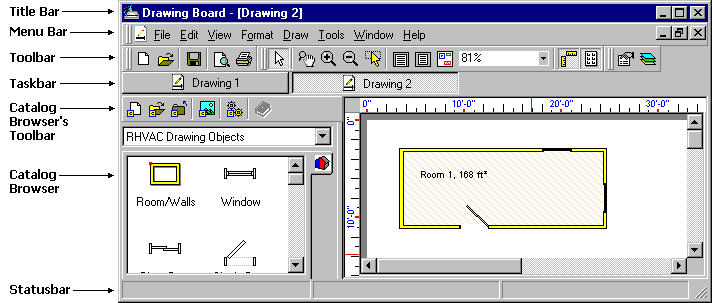

Drawing Board Stand Alone Program Overview |
  
|
Drawing Board Stand Alone Program Overview |
|
The "Stand Alone" version of Drawing Board is a separate program that is included with your installation of Chvac, Rhvac or Ductsize. Normally, you will not use the stand alone version, but instead will open a Drawing Board window inside of one of these other calculation programs. But if you don't need load calculations or duct sizing and only want to create a drawing, you can open the stand alone version to create, edit and print drawings. The program file is called DrawBrd.exe and is normally located in the folder C:\Program Files\Elite Software\Drawing Board 6.
Below is a picture of the stand alone program. As you can see, it is very similar to the version of Drawing Board that runs within the calculation programs.

Title Bar: Displays the name of the current drawing, if one is open and its window is maximized. If no drawing is open or if the current drawing window is not maximized, the caption just says, "Drawing Board".
Menu Bar: The customizable menu provides access to all of the program's features.
Toolbar: The customizable toolbar displays the items from the main menu that you will be using the most. If a drawing is open, most of the toolbar buttons will appear as they do in the above picture. If no project is open, several of the buttons will be grayed out.
Taskbar: Similar to the Windows taskbar, a button is displayed for each open drawing window.
Catalog Browser's Toolbar: Contains buttons for opening and closing catalogs and for editing the properties of the current catalog.
Catalog Browser: A browsing window for the catalogs. You can switch between open catalogs, open more catalogs, create new catalogs, and drop objects onto the drawing window.
Statusbar: Displays miscellaneous information about the program. Displays a progress indicator during saving and opening drawings.